Nonlinear Convex Optimization¶
In this chapter we consider nonlinear convex optimization problems of the form

The functions  are convex and twice differentiable and the
linear inequalities are generalized inequalities with respect to a proper
convex cone, defined as a product of a nonnegative orthant, second-order
cones, and positive semidefinite cones.
are convex and twice differentiable and the
linear inequalities are generalized inequalities with respect to a proper
convex cone, defined as a product of a nonnegative orthant, second-order
cones, and positive semidefinite cones.
The basic functions are cp and cpl, described in the sections Problems with Nonlinear Objectives and Problems with Linear Objectives. A simpler interface for geometric programming problems is discussed in the section Geometric Programming. In the section Exploiting Structure we explain how custom solvers can be implemented that exploit structure in specific classes of problems. The last section describes the algorithm parameters that control the solvers.
Problems with Nonlinear Objectives¶
- cvxopt.solvers.cp(F[, G, h[, dims[, A, b[, kktsolver]]]])¶
Solves a convex optimization problem
(1)

The argument F is a function that evaluates the objective and nonlinear constraint functions. It must handle the following calling sequences.
F() returns a tuple (m, x0), where 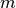 is the number of nonlinear constraints and
 is a point in
the domain of
is a point in
the domain of  . x0 is a dense real matrix of size
(
. x0 is a dense real matrix of size
( , 1).
, 1).F(x), with x a dense real matrix of size (
, 1),
returns a tuple (f, Df). f is a dense real matrix of
size ( , 1), with f[k] equal to
, 1), with f[k] equal to  .
(If is zero, f can also be returned as a number.)
Df is a dense or sparse real matrix of size ( + 1,
) with Df[k,:] equal to the transpose of the
gradient 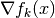. If
.
(If is zero, f can also be returned as a number.)
Df is a dense or sparse real matrix of size ( + 1,
) with Df[k,:] equal to the transpose of the
gradient 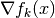. If  is not in the domain
of , F(x) returns None or a tuple
(None, None).
is not in the domain
of , F(x) returns None or a tuple
(None, None).F(x,z), with x a dense real matrix of size (
, 1)
and z a positive dense real matrix of size ( + 1, 1)
returns a tuple (f, Df, H). f and Df are
defined as above. H is a square dense or sparse real matrix of
size (, ), whose lower triangular part contains
the lower triangular part of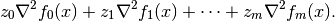
If F is called with two arguments, it can be assumed that
is in the domain of .
The linear inequalities are with respect to a cone
 defined
as a Cartesian product of a nonnegative orthant, a number of
second-order cones, and a number of positive semidefinite cones:
defined
as a Cartesian product of a nonnegative orthant, a number of
second-order cones, and a number of positive semidefinite cones:
with
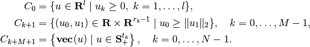
Here 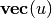 denotes a symmetric matrix 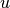 stored as a vector in column major order.
The arguments h and b are real single-column dense matrices. G and A are real dense or sparse matrices. The default values for A and b are sparse matrices with zero rows, meaning that there are no equality constraints. The number of rows of G and h is equal to
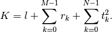
The columns of G and h are vectors in

where the last 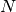 components represent symmetric matrices stored in column major order. The strictly upper triangular entries of these matrices are not accessed (i.e., the symmetric matrices are stored in the 'L'-type column major order used in the blas and lapack modules).
The argument dims is a dictionary with the dimensions of the cones. It has three fields.
- dims['l']:
 , the dimension of the nonnegative orthant (a nonnegative
integer).
, the dimension of the nonnegative orthant (a nonnegative
integer).- dims['q']:
![[r_0, \ldots, r_{M-1}]](_images/math/f9408643dfec56ef1bdd651b0858bed3b41a899b.png) , a list with the dimensions of the
second-order cones (positive integers).
, a list with the dimensions of the
second-order cones (positive integers).- dims['s']:
![[t_0, \ldots, t_{N-1}]](_images/math/15c9e0d5b18ecfcec0dc5faf60950122d134d40e.png) , a list with the dimensions of the
positive semidefinite cones (nonnegative integers).
, a list with the dimensions of the
positive semidefinite cones (nonnegative integers).
The default value of dims is {'l': h.size[0], 'q': [], 's': []}, i.e., the default assumption is that the linear inequalities are componentwise inequalities.
The role of the optional argument kktsolver is explained in the section Exploiting Structure.
cp returns a dictionary that contains the result and information about the accuracy of the solution. The most important fields have keys 'status', 'x', 'snl', 'sl', 'y', 'znl', 'zl'. The possible values of the 'status' key are:
- 'optimal'
In this case the 'x' entry of the dictionary is the primal optimal solution, the 'snl' and 'sl' entries are the corresponding slacks in the nonlinear and linear inequality constraints, and the 'znl', 'zl' and 'y' entries are the optimal values of the dual variables associated with the nonlinear inequalities, the linear inequalities, and the linear equality constraints. These vectors approximately satisfy the Karush-Kuhn-Tucker (KKT) conditions

where 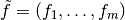.
- 'unknown'
- This indicates that the algorithm terminated before a solution was found, due to numerical difficulties or because the maximum number of iterations was reached. The 'x', 'snl', 'sl', 'y', 'znl', and 'zl' entries contain the iterates when the algorithm terminated.
cp solves the problem by applying cpl to the epigraph form problem

The other entries in the output dictionary of cp describe the accuracy of the solution and are copied from the output of cpl applied to this epigraph form problem.
cp requires that the problem is strictly primal and dual feasible and that
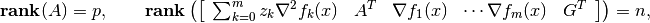
for all
and all positive  .
.
- Example: equality constrained analytic centering
The equality constrained analytic centering problem is defined as
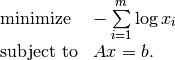
The function acent defined below solves the problem, assuming it is solvable.
from cvxopt import solvers, matrix, spdiag, log def acent(A, b): m, n = A.size def F(x=None, z=None): if x is None: return 0, matrix(1.0, (n,1)) if min(x) <= 0.0: return None f = -sum(log(x)) Df = -(x**-1).T if z is None: return f, Df H = spdiag(z[0] * x**-2) return f, Df, H return solvers.cp(F, A=A, b=b)['x']
- Example: robust least-squares
The function robls defined below solves the unconstrained problem
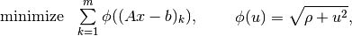
where
 .
.from cvxopt import solvers, matrix, spdiag, sqrt, div def robls(A, b, rho): m, n = A.size def F(x=None, z=None): if x is None: return 0, matrix(0.0, (n,1)) y = A*x-b w = sqrt(rho + y**2) f = sum(w) Df = div(y, w).T * A if z is None: return f, Df H = A.T * spdiag(z[0]*rho*(w**-3)) * A return f, Df, H return solvers.cp(F)['x']
Example: analytic centering with cone constraints
from cvxopt import matrix, log, div, spdiag, solvers def F(x = None, z = None): if x is None: return 0, matrix(0.0, (3,1)) if max(abs(x)) >= 1.0: return None u = 1 - x**2 val = -sum(log(u)) Df = div(2*x, u).T if z is None: return val, Df H = spdiag(2 * z[0] * div(1 + u**2, u**2)) return val, Df, H G = matrix([ [0., -1., 0., 0., -21., -11., 0., -11., 10., 8., 0., 8., 5.], [0., 0., -1., 0., 0., 10., 16., 10., -10., -10., 16., -10., 3.], [0., 0., 0., -1., -5., 2., -17., 2., -6., 8., -17., -7., 6.] ]) h = matrix([1.0, 0.0, 0.0, 0.0, 20., 10., 40., 10., 80., 10., 40., 10., 15.]) dims = {'l': 0, 'q': [4], 's': [3]} sol = solvers.cp(F, G, h, dims) print(sol['x']) [ 4.11e-01] [ 5.59e-01] [-7.20e-01]
![\begin{array}{ll}
\mbox{minimize}
& -\log(1-x_1^2) -\log(1-x_2^2) -\log(1-x_3^2) \\
\mbox{subject to}
& \|x\|_2 \leq 1 \\
& x_1 \left[\begin{array}{rrr}
-21 & -11 & 0 \\ -11 & 10 & 8 \\ 0 & 8 & 5
\end{array}\right] +
x_2 \left[\begin{array}{rrr}
0 & 10 & 16 \\ 10 & -10 & -10 \\ 16 & -10 & 3
\end{array}\right] +
x_3 \left[\begin{array}{rrr}
-5 & 2 & -17 \\ 2 & -6 & 8 \\ -17 & -7 & 6
\end{array}\right]
\preceq \left[\begin{array}{rrr}
20 & 10 & 40 \\ 10 & 80 & 10 \\ 40 & 10 & 15
\end{array}\right].
\end{array}](_images/math/506236b8fdffce673281716be8d19ead652768cc.png)
Problems with Linear Objectives¶
- cvxopt.solvers.cpl(c, F[, G, h[, dims[, A, b[, kktsolver]]]])¶
Solves a convex optimization problem with a linear objective

c is a real single-column dense matrix.
F is a function that evaluates the nonlinear constraint functions. It must handle the following calling sequences.
F() returns a tuple (m, x0), where m is the number of nonlinear constraints and x0 is a point in the domain of
. x0 is a dense real matrix of size (, 1).F(x), with x a dense real matrix of size (
, 1),
returns a tuple (f, Df). f is a dense real matrix of
size (, 1), with f[k] equal to .
Df is a dense or sparse real matrix of size (,
) with Df[k,:] equal to the transpose of the
gradient . If is not in the domain
of , F(x) returns None or a tuple
(None, None).F(x,z), with x a dense real matrix of size (
, 1)
and z a positive dense real matrix of size (, 1)
returns a tuple (f, Df, H). f and Df are defined
as above. H is a square dense or sparse real matrix of size
(, ), whose lower triangular part contains the
lower triangular part of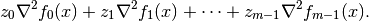
If F is called with two arguments, it can be assumed that
is in the domain of .
The linear inequalities are with respect to a cone
defined as
a Cartesian product of a nonnegative orthant, a number of second-order
cones, and a number of positive semidefinite cones: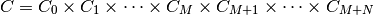
with

Here denotes a symmetric matrix stored as a vector in column major order.
The arguments h and b are real single-column dense matrices. G and A are real dense or sparse matrices. The default values for A and b are sparse matrices with zero rows, meaning that there are no equality constraints. The number of rows of G and h is equal to
The columns of G and h are vectors in
where the last components represent symmetric matrices stored in column major order. The strictly upper triangular entries of these matrices are not accessed (i.e., the symmetric matrices are stored in the 'L'-type column major order used in the blas and lapack modules.
The argument dims is a dictionary with the dimensions of the cones. It has three fields.
- dims['l']:
- , the dimension of the nonnegative orthant (a nonnegative
integer).
- dims['q']:
- , a list with the dimensions of the
second-order cones (positive integers).
- dims['s']:
- , a list with the dimensions of the
positive semidefinite cones (nonnegative integers).
The default value of dims is {'l': h.size[0], 'q': [], 's': []}, i.e., the default assumption is that the linear inequalities are componentwise inequalities.
The role of the optional argument kktsolver is explained in the section Exploiting Structure.
cpl returns a dictionary that contains the result and information about the accuracy of the solution. The most important fields have keys 'status', 'x', 'snl', 'sl', 'y', 'znl', 'zl'. The possible values of the 'status' key are:
- 'optimal'
In this case the 'x' entry of the dictionary is the primal optimal solution, the 'snl' and 'sl' entries are the corresponding slacks in the nonlinear and linear inequality constraints, and the 'znl', 'zl', and 'y' entries are the optimal values of the dual variables associated with the nonlinear inequalities, the linear inequalities, and the linear equality constraints. These vectors approximately satisfy the Karush-Kuhn-Tucker (KKT) conditions
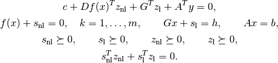
- 'unknown'
- This indicates that the algorithm terminated before a solution was found, due to numerical difficulties or because the maximum number of iterations was reached. The 'x', 'snl', 'sl', 'y', 'znl', and 'zl' entries contain the iterates when the algorithm terminated.
The other entries in the output dictionary describe the accuracy of the solution. The entries 'primal objective', 'dual objective', 'gap', and 'relative gap' give the primal objective
 , the dual objective, calculated
as
, the dual objective, calculated
as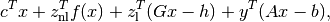
the duality gap

and the relative gap. The relative gap is defined as

and None otherwise. The entry with key 'primal infeasibility' gives the residual in the primal constraints,

where
is the point returned by F(). The entry
with key 'dual infeasibility' gives the residual
cpl requires that the problem is strictly primal and dual feasible and that
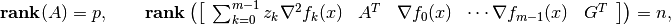
for all
and all positive .
- Example: floor planning
This example is the floor planning problem of section 8.8.2 in the book Convex Optimization:
![\begin{array}{ll}
\mbox{minimize} & W + H \\
\mbox{subject to}
& A_{\mathrm{min}, k}/h_k - w_k \leq 0, \quad k=1,\ldots, 5 \\
& x_1 \geq 0, \quad x_2 \geq 0, \quad x_4 \geq 0 \\
& x_1 + w_1 + \rho \leq x_3, \quad x_2 + w_2 + \rho \leq x_3,
\quad x_3 + w_3 + \rho \leq x_5, \\
& x_4 + w_4 + \rho \leq x_5, \quad x_5 + w_5 \leq W \\
& y_2 \geq 0, \quad y_3 \geq 0, \quad y_5 \geq 0 \\
& y_2 + h_2 + \rho \leq y_1, \quad y_1 + h_1 + \rho \leq y_4,
y_3 + h_3 + \rho \leq y_4, \\
& y_4 + h_4 \leq H, \quad y_5 + h_5 \leq H \\
& h_k/\gamma \leq w_k \leq \gamma h_k, \quad k=1,\ldots,5.
\end{array}](_images/math/34354d108ac6971eb68a84c984bc8ac4a6a2ab41.png)
This problem has 22 variables

5 nonlinear inequality constraints, and 26 linear inequality constraints. The code belows defines a function floorplan that solves the problem by calling cp, then applies it to 4 instances, and creates a figure.
import pylab from cvxopt import solvers, matrix, spmatrix, mul, div def floorplan(Amin): # minimize W+H # subject to Amink / hk <= wk, k = 1,..., 5 # x1 >= 0, x2 >= 0, x4 >= 0 # x1 + w1 + rho <= x3 # x2 + w2 + rho <= x3 # x3 + w3 + rho <= x5 # x4 + w4 + rho <= x5 # x5 + w5 <= W # y2 >= 0, y3 >= 0, y5 >= 0 # y2 + h2 + rho <= y1 # y1 + h1 + rho <= y4 # y3 + h3 + rho <= y4 # y4 + h4 <= H # y5 + h5 <= H # hk/gamma <= wk <= gamma*hk, k = 1, ..., 5 # # 22 Variables W, H, x (5), y (5), w (5), h (5). # # W, H: scalars; bounding box width and height # x, y: 5-vectors; coordinates of bottom left corners of blocks # w, h: 5-vectors; widths and heigths of the 5 blocks rho, gamma = 1.0, 5.0 # min spacing, min aspect ratio # The objective is to minimize W + H. There are five nonlinear # constraints # # -wk + Amink / hk <= 0, k = 1, ..., 5 c = matrix(2*[1.0] + 20*[0.0]) def F(x=None, z=None): if x is None: return 5, matrix(17*[0.0] + 5*[1.0]) if min(x[17:]) <= 0.0: return None f = -x[12:17] + div(Amin, x[17:]) Df = matrix(0.0, (5,22)) Df[:,12:17] = spmatrix(-1.0, range(5), range(5)) Df[:,17:] = spmatrix(-div(Amin, x[17:]**2), range(5), range(5)) if z is None: return f, Df H = spmatrix( 2.0* mul(z, div(Amin, x[17::]**3)), range(17,22), range(17,22) ) return f, Df, H G = matrix(0.0, (26,22)) h = matrix(0.0, (26,1)) G[0,2] = -1.0 # -x1 <= 0 G[1,3] = -1.0 # -x2 <= 0 G[2,5] = -1.0 # -x4 <= 0 G[3, [2, 4, 12]], h[3] = [1.0, -1.0, 1.0], -rho # x1 - x3 + w1 <= -rho G[4, [3, 4, 13]], h[4] = [1.0, -1.0, 1.0], -rho # x2 - x3 + w2 <= -rho G[5, [4, 6, 14]], h[5] = [1.0, -1.0, 1.0], -rho # x3 - x5 + w3 <= -rho G[6, [5, 6, 15]], h[6] = [1.0, -1.0, 1.0], -rho # x4 - x5 + w4 <= -rho G[7, [0, 6, 16]] = -1.0, 1.0, 1.0 # -W + x5 + w5 <= 0 G[8,8] = -1.0 # -y2 <= 0 G[9,9] = -1.0 # -y3 <= 0 G[10,11] = -1.0 # -y5 <= 0 G[11, [7, 8, 18]], h[11] = [-1.0, 1.0, 1.0], -rho # -y1 + y2 + h2 <= -rho G[12, [7, 10, 17]], h[12] = [1.0, -1.0, 1.0], -rho # y1 - y4 + h1 <= -rho G[13, [9, 10, 19]], h[13] = [1.0, -1.0, 1.0], -rho # y3 - y4 + h3 <= -rho G[14, [1, 10, 20]] = -1.0, 1.0, 1.0 # -H + y4 + h4 <= 0 G[15, [1, 11, 21]] = -1.0, 1.0, 1.0 # -H + y5 + h5 <= 0 G[16, [12, 17]] = -1.0, 1.0/gamma # -w1 + h1/gamma <= 0 G[17, [12, 17]] = 1.0, -gamma # w1 - gamma * h1 <= 0 G[18, [13, 18]] = -1.0, 1.0/gamma # -w2 + h2/gamma <= 0 G[19, [13, 18]] = 1.0, -gamma # w2 - gamma * h2 <= 0 G[20, [14, 18]] = -1.0, 1.0/gamma # -w3 + h3/gamma <= 0 G[21, [14, 19]] = 1.0, -gamma # w3 - gamma * h3 <= 0 G[22, [15, 19]] = -1.0, 1.0/gamma # -w4 + h4/gamma <= 0 G[23, [15, 20]] = 1.0, -gamma # w4 - gamma * h4 <= 0 G[24, [16, 21]] = -1.0, 1.0/gamma # -w5 + h5/gamma <= 0 G[25, [16, 21]] = 1.0, -gamma # w5 - gamma * h5 <= 0.0 # solve and return W, H, x, y, w, h sol = solvers.cpl(c, F, G, h) return sol['x'][0], sol['x'][1], sol['x'][2:7], sol['x'][7:12], sol['x'][12:17], sol['x'][17:] pylab.figure(facecolor='w') pylab.subplot(221) Amin = matrix([100., 100., 100., 100., 100.]) W, H, x, y, w, h = floorplan(Amin) for k in range(5): pylab.fill([x[k], x[k], x[k]+w[k], x[k]+w[k]], [y[k], y[k]+h[k], y[k]+h[k], y[k]], facecolor = '#D0D0D0') pylab.text(x[k]+.5*w[k], y[k]+.5*h[k], "%d" %(k+1)) pylab.axis([-1.0, 26, -1.0, 26]) pylab.xticks([]) pylab.yticks([]) pylab.subplot(222) Amin = matrix([20., 50., 80., 150., 200.]) W, H, x, y, w, h = floorplan(Amin) for k in range(5): pylab.fill([x[k], x[k], x[k]+w[k], x[k]+w[k]], [y[k], y[k]+h[k], y[k]+h[k], y[k]], 'facecolor = #D0D0D0') pylab.text(x[k]+.5*w[k], y[k]+.5*h[k], "%d" %(k+1)) pylab.axis([-1.0, 26, -1.0, 26]) pylab.xticks([]) pylab.yticks([]) pylab.subplot(223) Amin = matrix([180., 80., 80., 80., 80.]) W, H, x, y, w, h = floorplan(Amin) for k in range(5): pylab.fill([x[k], x[k], x[k]+w[k], x[k]+w[k]], [y[k], y[k]+h[k], y[k]+h[k], y[k]], 'facecolor = #D0D0D0') pylab.text(x[k]+.5*w[k], y[k]+.5*h[k], "%d" %(k+1)) pylab.axis([-1.0, 26, -1.0, 26]) pylab.xticks([]) pylab.yticks([]) pylab.subplot(224) Amin = matrix([20., 150., 20., 200., 110.]) W, H, x, y, w, h = floorplan(Amin) for k in range(5): pylab.fill([x[k], x[k], x[k]+w[k], x[k]+w[k]], [y[k], y[k]+h[k], y[k]+h[k], y[k]], 'facecolor = #D0D0D0') pylab.text(x[k]+.5*w[k], y[k]+.5*h[k], "%d" %(k+1)) pylab.axis([-1.0, 26, -1.0, 26]) pylab.xticks([]) pylab.yticks([]) pylab.show()

Geometric Programming¶
- cvxopt.solvers.gp(K, F, g[, G, h[, A, b]])¶
Solves a geometric program in convex form
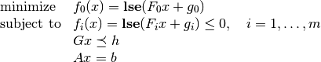
where
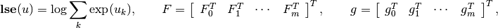
and the vector inequality denotes componentwise inequality. K is a list of + 1 positive integers with K[i] equal to the number of rows in 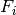. F is a dense or sparse real matrix of size (sum(K), n). g is a dense real matrix with one column and the same number of rows as F. G and A are dense or sparse real matrices. Their default values are sparse matrices with zero rows. h and b are dense real matrices with one column. Their default values are matrices of size (0, 1).
gp returns a dictionary with keys 'status', 'x', 'snl', 'sl', 'y', 'znl', and 'zl'. The possible values of the 'status' key are:
- 'optimal'
In this case the 'x' entry is the primal optimal solution, the 'snl' and 'sl' entries are the corresponding slacks in the nonlinear and linear inequality constraints. The 'znl', 'zl', and 'y' entries are the optimal values of the dual variables associated with the nonlinear and linear inequality constraints and the linear equality constraints. These values approximately satisfy

- 'unknown'
- This indicates that the algorithm terminated before a solution was found, due to numerical difficulties or because the maximum number of iterations was reached. The 'x', 'snl', 'sl', 'y', 'znl', and 'zl' contain the iterates when the algorithm terminated.
The other entries in the output dictionary describe the accuracy of the solution, and are taken from the output of cp.
As an example, we solve the small GP of section 2.4 of the paper A Tutorial on Geometric Programming. The posynomial form of the problem is
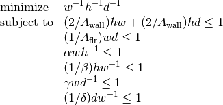
with variables  ,
,  , 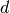.
, 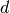.
from cvxopt import matrix, log, exp, solvers
Aflr = 1000.0
Awall = 100.0
alpha = 0.5
beta = 2.0
gamma = 0.5
delta = 2.0
F = matrix( [[-1., 1., 1., 0., -1., 1., 0., 0.],
[-1., 1., 0., 1., 1., -1., 1., -1.],
[-1., 0., 1., 1., 0., 0., -1., 1.]])
g = log( matrix( [1.0, 2/Awall, 2/Awall, 1/Aflr, alpha, 1/beta, gamma, 1/delta]) )
K = [1, 2, 1, 1, 1, 1, 1]
h, w, d = exp( solvers.gp(K, F, g)['x'] )
Exploiting Structure¶
By default, the functions cp and cpl do not exploit problem structure. Two mechanisms are provided for implementing customized solvers that take advantage of problem structure.
- Providing a function for solving KKT equations
The most expensive step of each iteration of cp is the solution of a set of linear equations (KKT equations) of the form
(2)
![\left[\begin{array}{ccc}
H & A^T & \tilde G^T \\
A & 0 & 0 \\
\tilde G & 0 & -W^T W
\end{array}\right]
\left[\begin{array}{c} u_x \\ u_y \\ u_z \end{array}\right]
=
\left[\begin{array}{c} b_x \\ b_y \\ b_z \end{array}\right],](_images/math/b344e21309e4a79bbcf70a30b5cef0ed18d2e8cf.png)
where
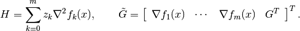
The matrix
 depends on the current iterates and is defined as
follows. Suppose
depends on the current iterates and is defined as
follows. Suppose
where
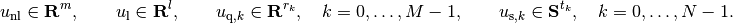
Then
is a block-diagonal matrix,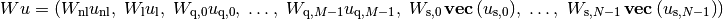
with the following diagonal blocks.
The first block is a positive diagonal scaling with a vector 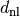:

This transformation is symmetric:
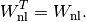
The second block is a positive diagonal scaling with a vector
 :
:
This transformation is symmetric:

The next 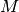 blocks are positive multiples of hyperbolic Householder transformations:

where
![\beta_k > 0, \qquad v_{k0} > 0, \qquad v_k^T Jv_k = 1, \qquad
J = \left[\begin{array}{cc} 1 & 0 \\ 0 & -I \end{array}\right].](_images/math/5f835d2d4a213eff54596ede687eff1c913db934.png)
These transformations are also symmetric:

The last blocks are congruence transformations with nonsingular matrices:
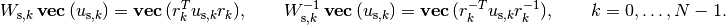
In general, this operation is not symmetric, and

It is often possible to exploit problem structure to solve (2) faster than by standard methods. The last argument kktsolver of cp allows the user to supply a Python function for solving the KKT equations. This function will be called as f = kktsolver(x, z, W). The argument x is the point at which the derivatives in the KKT matrix are evaluated. z is a positive vector of length it + 1, containing the coefficients in the 1,1 block
 . W is a dictionary that contains the
parameters of the scaling:
. W is a dictionary that contains the
parameters of the scaling:- W['dnl'] is the positive vector that defines the diagonal scaling for the nonlinear inequalities. W['dnli'] is its componentwise inverse.
- W['d'] is the positive vector that defines the diagonal scaling for the componentwise linear inequalities. W['di'] is its componentwise inverse.
- W['beta'] and W['v'] are lists of length with the coefficients and vectors that define the hyperbolic Householder transformations.
- W['r'] is a list of length with the matrices that define the the congruence transformations. W['rti'] is a list of length with the transposes of the inverses of the matrices in W['r'].
The function call f = kktsolver(x, z, W) should return a routine for solving the KKT system (2) defined by x, z, W. It will be called as f(bx, by, bz). On entry, bx, by, bz contain the right-hand side. On exit, they should contain the solution of the KKT system, with the last component scaled, i.e., on exit,

The role of the argument kktsolver in the function cpl is similar, except that in (2),
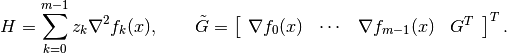
- Specifying constraints via Python functions
In the default use of cp, the arguments G and A are the coefficient matrices in the constraints of (2). It is also possible to specify these matrices by providing Python functions that evaluate the corresponding matrix-vector products and their adjoints.
If the argument G of cp is a Python function, then G(u, v[, alpha = 1.0, beta = 0.0, trans = 'N']) should evaluates the matrix-vector products

Similarly, if the argument A is a Python function, then A(u, v[, alpha = 1.0, beta = 0.0, trans = 'N']) should evaluate the matrix-vector products
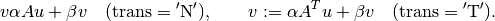
In a similar way, when the first argument F of cp returns matrices of first derivatives or second derivatives Df, H, these matrices can be specified as Python functions. If Df is a Python function, then Df(u, v[, alpha = 1.0, beta = 0.0, trans = 'N']) should evaluate the matrix-vector products
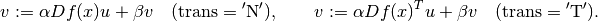
If H is a Python function, then H(u, v[, alpha, beta]) should evaluate the matrix-vector product

If G, A, Df, or H are Python functions, then the argument kktsolver must also be provided.
As an example, we consider the unconstrained problem
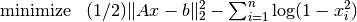
where  is an by matrix with less
than . The Hessian of the objective is diagonal plus a low-rank
term:
is an by matrix with less
than . The Hessian of the objective is diagonal plus a low-rank
term:
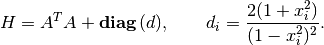
We can exploit this property when solving (2) by applying the matrix inversion lemma. We first solve
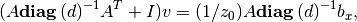
and then obtain

The following code follows this method. It also uses BLAS functions for matrix-matrix and matrix-vector products.
from cvxopt import matrix, spdiag, mul, div, log, blas, lapack, solvers, base
def l2ac(A, b):
"""
Solves
minimize (1/2) * ||A*x-b||_2^2 - sum log (1-xi^2)
assuming A is m x n with m << n.
"""
m, n = A.size
def F(x = None, z = None):
if x is None:
return 0, matrix(0.0, (n,1))
if max(abs(x)) >= 1.0:
return None
# r = A*x - b
r = -b
blas.gemv(A, x, r, beta = -1.0)
w = x**2
f = 0.5 * blas.nrm2(r)**2 - sum(log(1-w))
# gradf = A'*r + 2.0 * x ./ (1-w)
gradf = div(x, 1.0 - w)
blas.gemv(A, r, gradf, trans = 'T', beta = 2.0)
if z is None:
return f, gradf.T
else:
def Hf(u, v, alpha = 1.0, beta = 0.0):
# v := alpha * (A'*A*u + 2*((1+w)./(1-w)).*u + beta *v
v *= beta
v += 2.0 * alpha * mul(div(1.0+w, (1.0-w)**2), u)
blas.gemv(A, u, r)
blas.gemv(A, r, v, alpha = alpha, beta = 1.0, trans = 'T')
return f, gradf.T, Hf
# Custom solver for the Newton system
#
# z[0]*(A'*A + D)*x = bx
#
# where D = 2 * (1+x.^2) ./ (1-x.^2).^2. We apply the matrix inversion
# lemma and solve this as
#
# (A * D^-1 *A' + I) * v = A * D^-1 * bx / z[0]
# D * x = bx / z[0] - A'*v.
S = matrix(0.0, (m,m))
v = matrix(0.0, (m,1))
def Fkkt(x, z, W):
ds = (2.0 * div(1 + x**2, (1 - x**2)**2))**-0.5
Asc = spdiag(ds) * A
blas.syrk(Asc, S)
S[::m+1] += 1.0
lapack.potrf(S)
a = z[0]
def g(x, y, z):
x[:] = mul(x, ds) / a
blas.gemv(Asc, x, v)
lapack.potrs(S, v)
blas.gemv(Asc, v, x, alpha = -1.0, beta = 1.0, trans = 'T')
x[:] = mul(x, ds)
return g
return solvers.cp(F, kktsolver = Fkkt)['x']
Algorithm Parameters¶
The following algorithm control parameters are accessible via the dictionary solvers.options. By default the dictionary is empty and the default values of the parameters are used.
One can change the parameters in the default solvers by adding entries with the following key values.
- 'show_progress'
- True or False; turns the output to the screen on or off (default: True).
- 'maxiters'
- maximum number of iterations (default: 100).
- 'abstol'
- absolute accuracy (default: 1e-7).
- 'reltol'
- relative accuracy (default: 1e-6).
- 'feastol'
- tolerance for feasibility conditions (default: 1e-7).
- 'refinement'
- number of iterative refinement steps when solving KKT equations (default: 1).
For example the command
>>> from cvxopt import solvers
>>> solvers.options['show_progress'] = False
turns off the screen output during calls to the solvers. The tolerances abstol, reltol and feastol have the following meaning in cpl.
cpl returns with status 'optimal' if

where is the point returned by F(), and
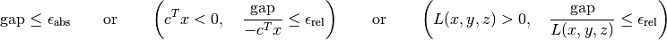
where
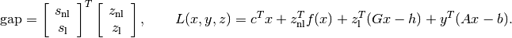
The functions cp and gp call cpl and hence use the same stopping criteria (with 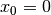 for gp).